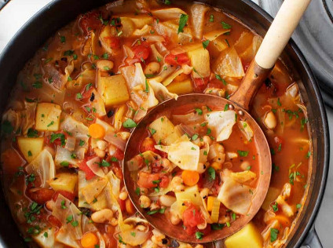

Cabbage Soup

Description
A wonderful healthy soup that answers the question? What do I do with a
whole head of cabbage? This recipe is both easy to make and will keep you
full the entire day.
Ingredients
- Cabbage - whole head, about 9 cups chopped
- Potatoes - about 2 medium, cut up
- Beans (white is best) - 1 can, drained and rinsed
- Carrots - 2, chopped
- Onions - 1 medium, chopped
- White Wine Vinegar - 2 tablespoons
- Fire roasted tomatoes - 2 cans (14.5 ounces), diced
- Vegetable Broth - 4 cups
- Garlic - 4-5 cloves, grated
- Thyme - 1 teaspoon, dried
- Black pepper to taste
- Parsley for garnish
Steps
- Heat the oil on medium heat. Add salt, carrots, onions, and pepper cook for
8 minutes, stirring occasionally.
- Add the vinegar an tomatoes, beans, potatoes, cabbage, broth, and thyme. Stir
then cover for 20 - 30 minutes. Simmer until the cabbage and potatoes are done.
- Season to taste, serve and eat while warm.